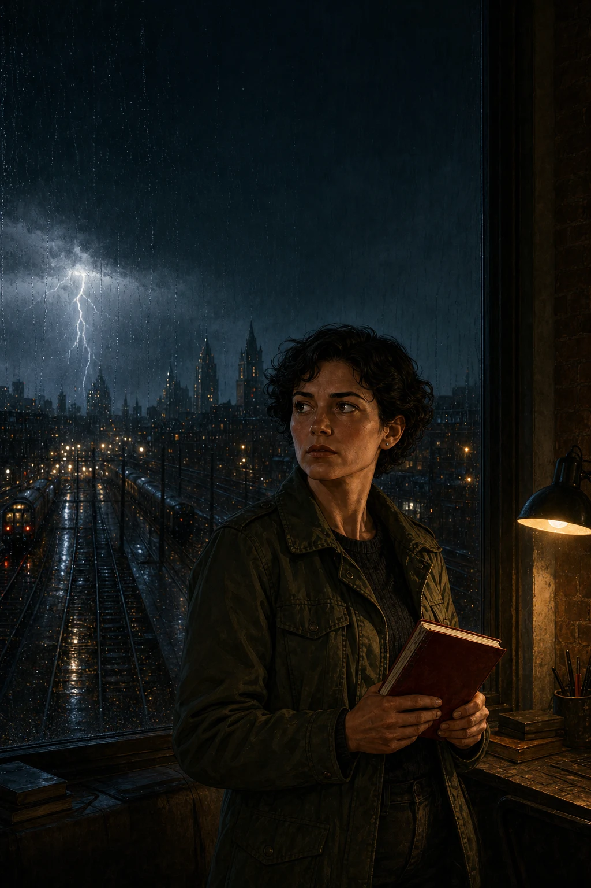

Die Nachrichten von morgen
Eine Stadt.
Viele offene Fragen.
Falkenbrück im Jahr 2045. Mira Winter und ihr Team halten die Verbindungen der Stadt am Leben. Dann erreichen sie Warnungen, die zu früh kommen. Eine Reihe über Technik, Vertrauen und die Menschen hinter den Bildschirmen.
Show EnglishHide English
Falkenbrück in 2045. Mira Winter and her team keep the city’s connections alive. Then warnings reach them that arrive too early. A series about technology, trust and the people behind the screens.
I · Das erste Signal

Buch 01
Die Nachricht um 03:17
Mitten im Sturm erhält Mira eine Warnung vor einem Kühlungsalarm. Die Anzeigen sind noch grün. Soll sie der Nachricht vertrauen?
Show EnglishHide English
In the middle of a storm, Mira receives a warning about a cooling alarm. The displays are still green. Should she trust the message?
Demnächst · Deutsch B1/B2